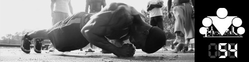

Вот мы и подошли к разбору четвертого базового упражнения в нашей тренировочной программы. Сегодня мы поговорим о том, какие переменные можно изменять в процессе выполнения выпадов, и на что это будет влиять.
Выпады - это шикарнейшее упражнее, если мы говорим об односторонних упражнениях, то есть тех, которые позволяют вам независимо прокачивать одну сторону тела от другой (например, левую ногу отдельно от правой и наоборот). Но вы не только можете за счёт выпадов избавляться от дисбаланса между ногами в целом, но так же с помощью корректировок движения можете смещать нагрузку с одних групп мышц на другие.
Чтобы понимать написанную ниже информацию, уделим немного внимания картинке, на которой изображены мышцы, работающие при выпадах (они подсвечены красненьким):
Ширина шага. Если вы сократите ширину шага меньше обычного (скажем вполовину), то нагрузка больше уйдёт на квадрицепс, и в меньшей степени будет задействован бицепс бедра. Если же, наоборот, вы сделаете шаг длиннее обычного, то нагрузки больше будет на бицепс бедра и ягодицы и меньше на квадрицепсе.
4 стороны света. Выпады можно делать не только вперёд/назад, но так же и в стороны. Этот вариант в большей степени позволяет нагрузить мышцы внутренней поверхности бедра и ягодицы, и в меньшей - мышцы передней поверхности бедра.
Повышаем градус. Выпады так же можно делать не только на ровную поверхность, но и на возвышение. Таким образом вы повысите сложность и интенсивность упражнения, а значит дадите дополнительный стимул мышцам (в первую очередь квадрицепсу) для роста.
Вот как-то так =)